MEDICINAL CHEMISTRY
ANTIBACTERIAL CHEMOTHERAPEUTICS SUFLOAMIDES,QUINOLONES
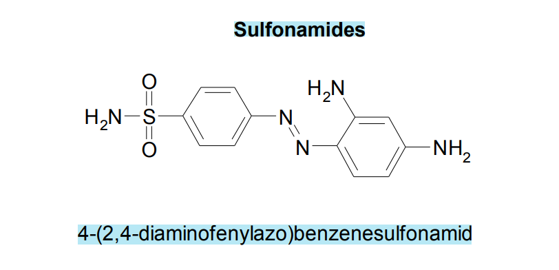
→ Red Eye
- belief that taken up by certain pathogenic bacteria and not by hummans cells
- colorless
- cleavage product fomred by reductive liver metabolism of the admn. dye.
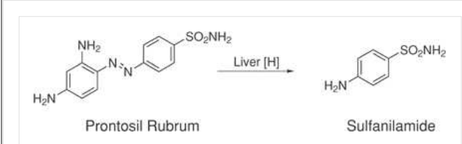
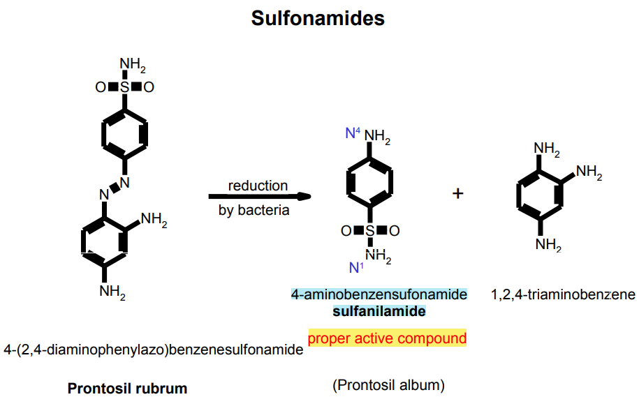
→ Compounds used for the treatment of baceterial infections
Mechanism of action of Sulfonamides
→ bacteriostatic
→ inhibit enzyme dihydropteroate synthase
- needed for biosynthesis of folic acid derivaties [thymine]
- which required for DNA
- (PABA)-[p-aminobenzoic acid]
→ folates are essential for the biosynthesis of thymidine
- without it bacteria cannot multiply
- this inhibition is strongly bacteriostatic → ultimetely bactercidical.
- adding additional PABA in diet
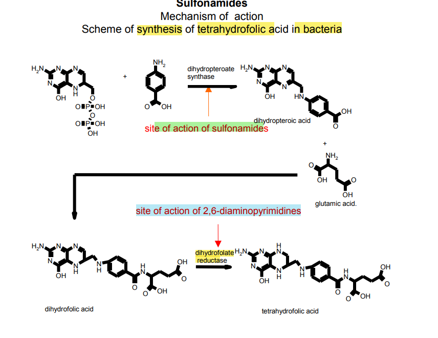
Mechanism of action of Sulfonamides
→ bacteriostatic
→ inhibit enzyme dihydropteroate synthase
- needed for biosynthesis of folic acid derivaties [thymine]
- which required for DNA
- (PABA)-[p-aminobenzoic acid]
→ folates are essential for the biosynthesis of thymidine
- without it bacteria cannot multiply
- this inhibition is strongly bacteriostatic → ultimetely bactercidical.
- adding additional PABA in diet
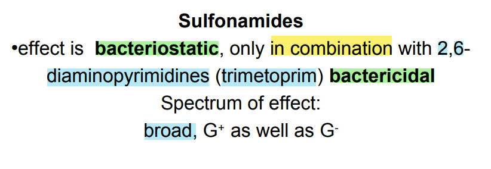
→Sulfadiazine
- form of its silver salt
- topically treatment of burns + against a wide range of bacteria,fungus
→ sulfisoxazole
- poor water solubility
- led to crystallization in the urine → kideny damage
- because molecules were un-ionized at urinary pH values.
- ↑ quantities of water to avoid crystalluria.
→ Sulfonamides
- deactivated by acetylation at N-4
- glucuronidation of the anilino nitrogen in the liver.
→ [STRUCTUAL VARIATION AMONG THE CLINICALY USEFUL SULONAMIDES IS RESTRICTED PRIMARILY TO INSTALLATION OF VARIOUS HETEROCYCLIC AROMATIC SUBSTITUENTS ON THE SULFOAMIDE NITROGEN ]
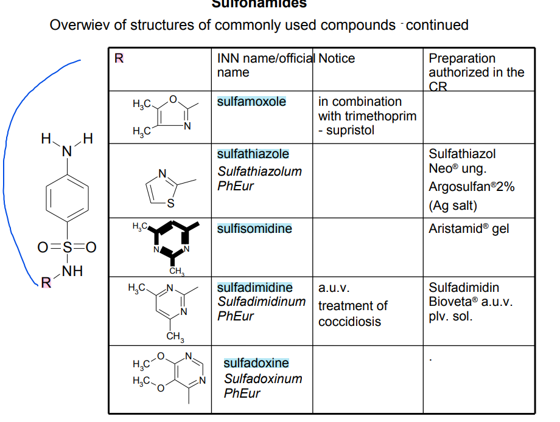
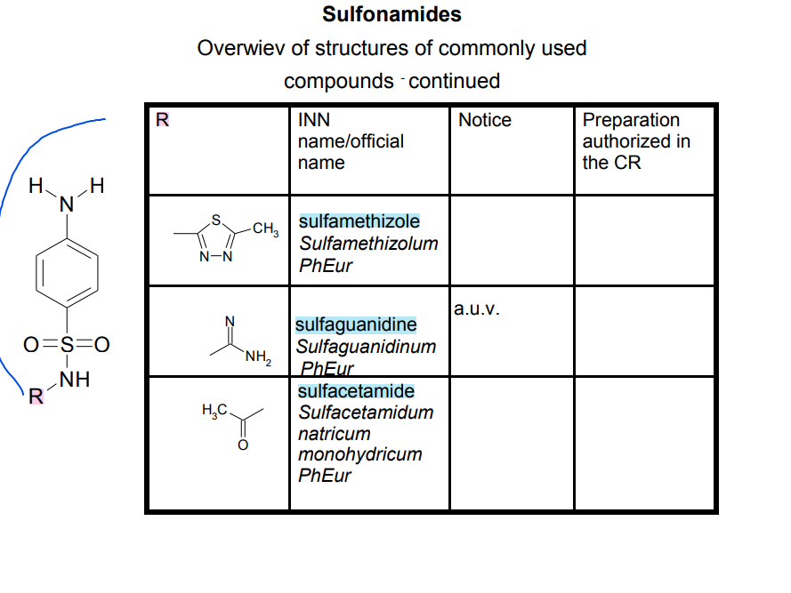
→ Suflaetamide
- used ophthalmically for treatment of eye infenction
- makes the N atom to which it is directly attached "partially electropositive"
→ replacement of one of the NH2 hydrogens
- by an electron-withdrawing hteroaromataic ring
- antimicrobial acitivity + enhance potency + ↑ water solubility
Adverse Effects
→ rash , phtosensitivity , drug fever
→ StJ syndrome
→ erythema multiforme
- ulcereation of mucus membranes of the eye , mouth , urethra
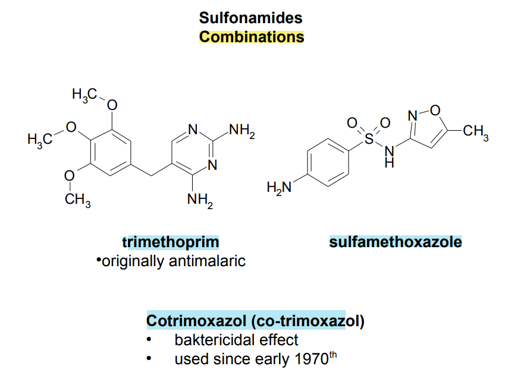
TRIMETHROPRIM,
→ Inhibitor prevents tetrahydrofolic acid biosynthesis and results in bacteriostasis
→ single agent
- orall treatment of uncomplicated urinary tract infenction by susceptible bacteria
→ induce bacterial resistance
→ resistance is increasingly common
- pneymococcalk infenctions
- single amino acid mutation in the dihydrofolate reductase enzyme
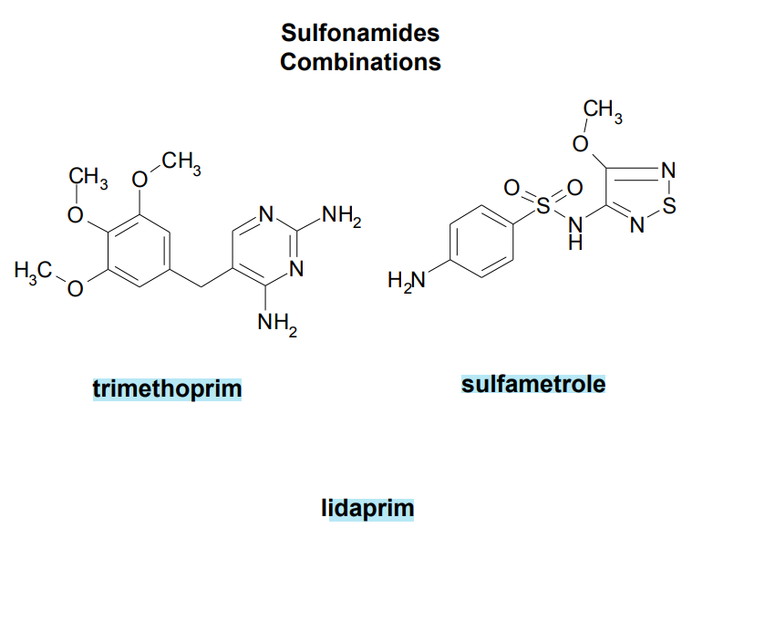
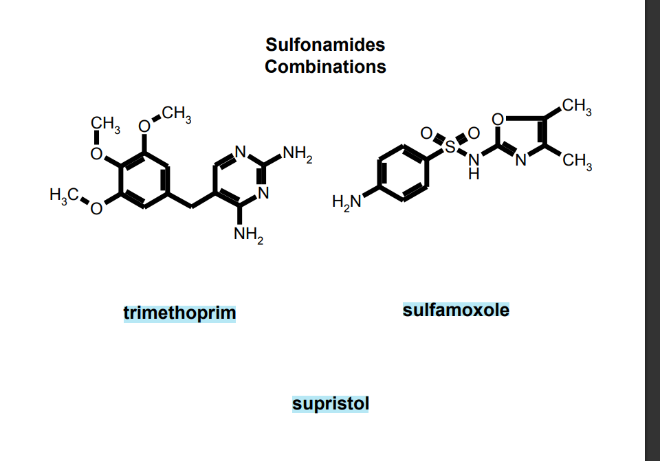
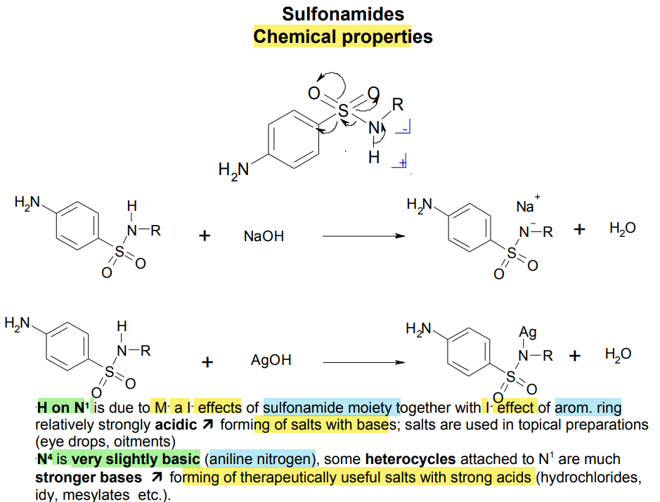
QUINOLONES:
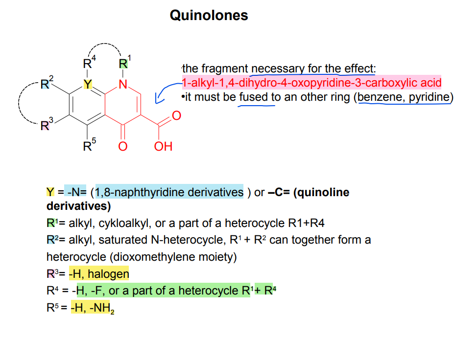
→ synthetic substance
- N-1 alkylated 3-carboxypyrid-4-one ring fused
- to another aromatic ring [carries other substituents]
- classification as 1st gen. due to spectrum of activity and pharmacokientic properties]
- G-
- greatly increased the biological activity.
Quinolones-Structure-activity relationship
→essential pharmacophore --. carboxy-4-pyridone nucleus
- carboxylic acid and ketone → involved in the binding to the DNA/DNA-gyrase enzyme
- inactivates the molecule
- sub at C-2 interferes with enzyme-substrrate complexation
- greatly improves antimicrobial activity [ by ↑ lipophilicity]
- further improves absorption and half-life
- also may ↑ drug-induced photosensitivity.
- improves the spectrum of activity G-
- piperazinyl group at C-7 also increase binding to GABA.
- as does the addition of bulky groups at the N-1 position (sparfloxacin)
→ cyclopropyl sub. at N-1`
- broaden activity → against atypical bacteria
- Mycoplasma , Clamydia , Legionella species.
→ Several of the quinolones produce mild to severe photosensitivity
→ A C-8 halogen appears to produce the highest incidence of photosensitivity via singlet oxygen and radical induction.
- Lomerfloxacin → highest potential for producing photosensitivity
- methoxy group at C-8
→ chemical incopatibility of these agents
- ability of these agents to chelate polyalent metmatl ions (Ca+2,Mg+2,Zn+2,Fe+2,Al+3)
- results in — ↓ solubility — ↓ drug absorption
- between metals and 3-carboxylic acid and 4-keto groups.
- should be admin 4 hours before or 2 hours after the quinolones.
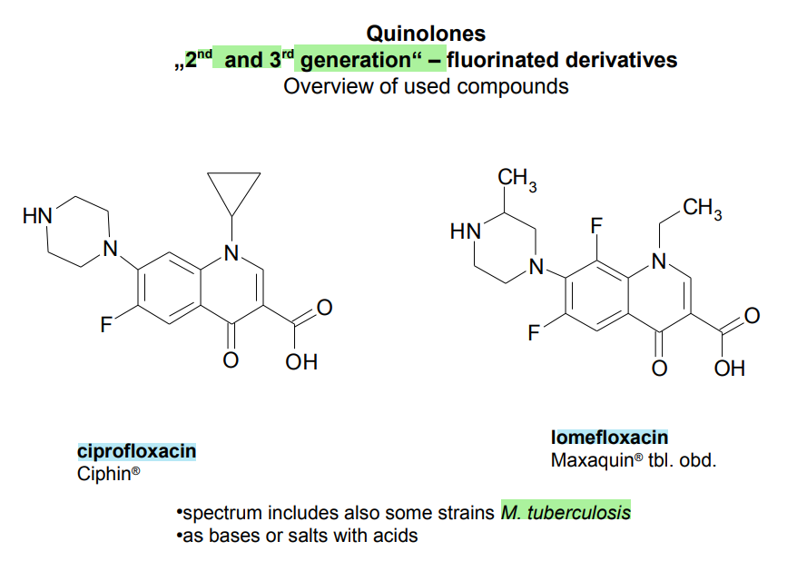
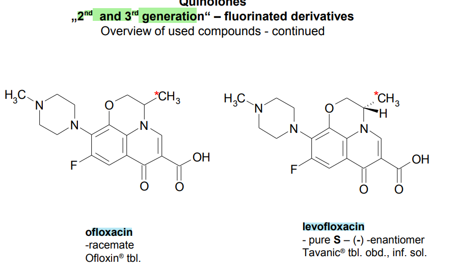
→ introduction of a third ring to the nucleus gives rise to ofloxacin
- assymetric carbon at C'3-position
- S-(-) isomer
- twice as active as ofloxacin
- 8 to 128 fold more potent than the R-(+)-isomer
- resulting from increased binding to the DNA-gyrase
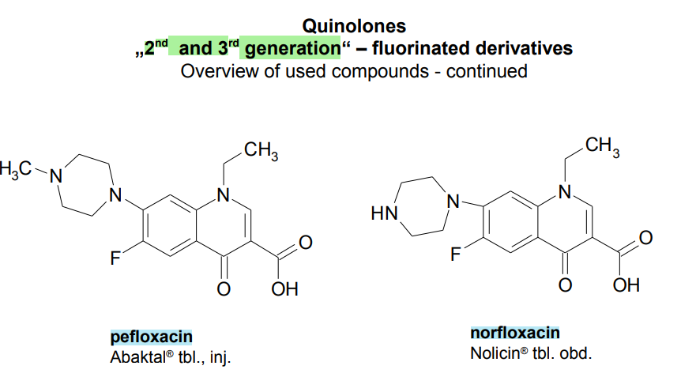
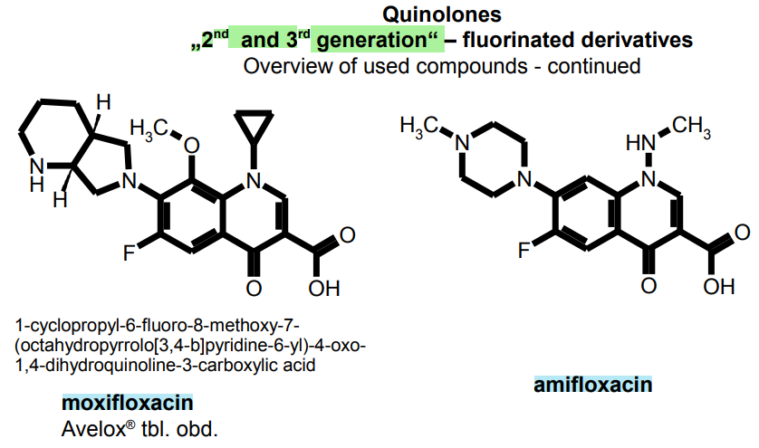
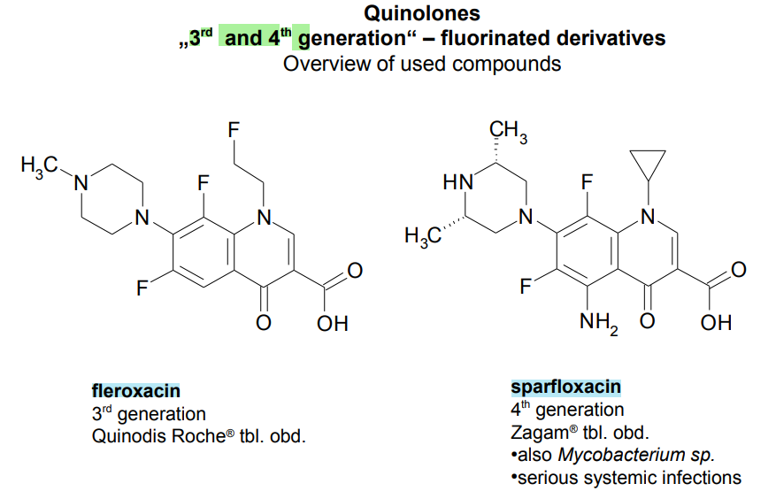
{kind=link}
{kind=link}
{kind=link}
{kind=link}
{kind=link}
{kind=link}
{kind=link}
{kind=link}
{kind=link}
{kind=link}
{kind=link}
{kind=link}
{kind=link}
{kind=link}
{kind=link}
{kind=link}
{kind=link}
{kind=link}
{kind=link}
{kind=link}
{kind=link}
{kind=link}
{kind=link}